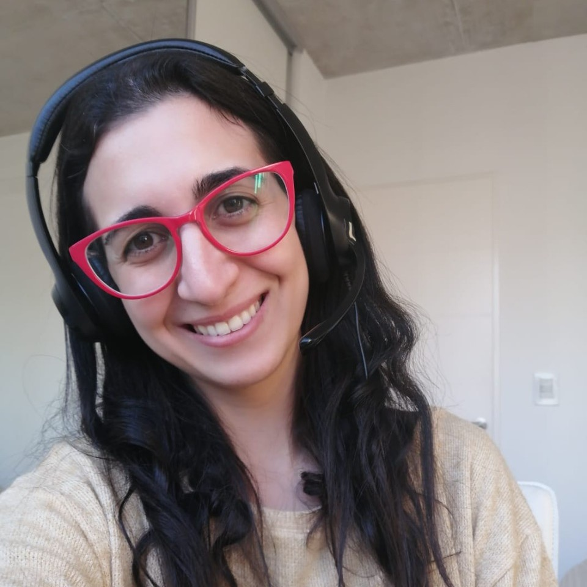

.png)
Somos un equipo de mujeres profesionales en el área de RRHH enfocadas en brindar servicios que contribuyan con aquellas herramientas que las organizaciones necesitan, potenciando el desarrollo de su capital humano, interpretando cada necesidad desde nuestro rol de especialistas.
Nuestra mision es brindar herramientas para la gestión del talento a nuestros clientes de modo tal que puedan potenciar sus recursos para alcanzar la estrategia organizacional con eficacia y eficiencia con el objetivo es ser un proveedor estratégico para nuestros clientes a través del desarrollo de proyectos diversos y desafiantes.
Basamos nuestra gestion en valores como el compromiso, el trabajo en equipo, la flexibilidad, la innovacion y la honestidad para otorgar un servicio de calidad y a la medida segun las necesidades de cada cliente.
NUESTRO EQUIPO
Giuliana D´Onofrio
Lic. en Recursos Humanos
Fiorela M. Utrera
Lic. en Recursos Humanos
Cinthia A. Galeri
Lic. en Recursos Humanos
Somos una nueva generación de profesionales de Recursos Humanos, sabemos lo importante que es actualizarse día a día, y que un mundo global exige un mayor compromiso y responsabilidad, es por eso que desarrollamos una cultura innovadora y un modelo de alta calidad en asesoría profesional oportuna, confiable y pertinente para el antes, durante y después del proceso organizacional, que contribuya con nuestros clientes a que sus recursos evolucionen, potenciandolos, a través de un ambiente que promueva mejoramiento continuo, trabajo en equipo, y una actitud proactiva hacia la solución de problemas con nuestros clientes, comunidad y ambiente.
Nuestro equipo está conformado por tres expertas en el Área de Recursos Humanos, articulamos nuestros conocimientos y experiencias para brindar un servicio integral a nuestros clientes.
Giulana es la encargada de la gestión comercial y el contacto directo con nuestros clientes, de su comunicación con las organizaciones surge la información fundamental con la que luego trabajaremos en conjunto para diseñar un servicio a medida.
Fiorela posee una amplia experiencia en selección de perfiles IT por lo cual es la encargada de llevar a cabo todo lo relacionado con este proceso.
Por último y no menos importante Cinthia es la encargada de toda la gestión administrativa de la consultora y la comunicación con los diferentes proveedores.
NUESTROS SERVICIOS
Diagnostico organizacional:
- Relevamiento de la Cultura Organizacional
- Encuesta de Clima Laboral
- Analisis FODA
- Diseño Organizacional
Análisis y descripción de puestos de trabajo:
- Diseño y/o actualización del organigrama
- Descripción y valuación de puestos
- Diseño de compensación integral
Selección de perfiles IT:
- Proceso selección end to end
- Entrevistas y clasificación de perfiles
Soluciones para pequeños negocios:
- Asesoramiento a medida adaptandonos a las
necesidades y situación del cliente.
necesidades y situación del cliente.